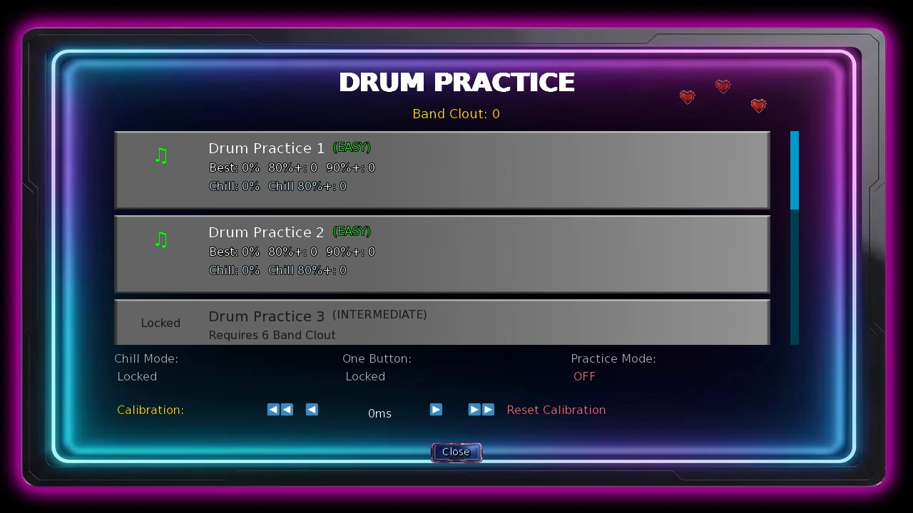
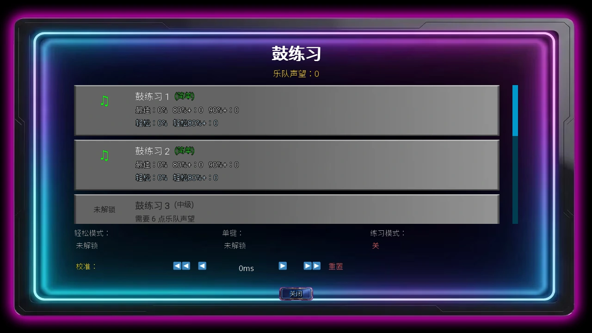

Select a screenshot to enlarge it. Screens show example inventories and progress.
Music and timing challenges
Drum practice, Abby’s dance challenge and Sandra’s duet share musical timing, but their rewards and score requirements are different. This guide covers controls, song unlocks, practice options and current result rules. Composing songs and the Haunted Mansion piano puzzle have their own guides.
Where to start and what it costs
| Activity | Location / start window | Base action cost | Requirement |
|---|---|---|---|
| Practice Drums | Present → Downtown → Music Studio; 12:00–23:00 | 25 min; $30; 20 Energy | Choose a song or calibration to commit the session |
| Challenge Abby | Present → Downtown → Dance & Yoga Studio; 12:00–23:00 | 45 min; 20 Energy | Complete the studio confrontation; participant availability applies |
| Duet with Sandra | Medieval → Village Outskirts → Bards Guild | 30 min; 10 Energy | Friend (100), completed duet proposal and the displayed content access |
Drums charge once for a committed session after you leave the song menu, rather than charging again for each song in that menu loop. Closing the initial menu without choosing a song or calibration cancels the action. Once you select one, cancelling the song does not undo that commitment. Use the Abby and Sandra guides for their personal prerequisites.
Read the notes and press on time
For drums, match the note using ← / A, ↑ / W, → / D or ↓ / S. Space plays the purple tom note. On Android, tap the screen on the beat. The song menu’s One Button mode makes Space or a click match any note, while timing still matters.
Abby’s dance and Sandra’s duet use the four Arrow keys plus Space. Follow the on-screen note rather than pressing every key at once. A wrong key counts as a miss even when its timing is close. Dance also accepts W/A/S/D; do not assume every musical activity uses the same alternate keys.
| Activity | Perfect window | Good-hit window | Base points |
|---|---|---|---|
| Drums and dance | ±44 ms | ±88 ms | 100 Perfect / 50 Good |
| Sandra duet | ±50 ms | ±95 ms | 100 Perfect / 50 Good |
Owning the Lute adds 5 ms to both timing windows in these activities. Drums and dance score points double on Easy difficulty. The Time effect separately doubles dance and Sandra duet points; it does not double drum Clout or drum score. For dance, Easy and Time stack to ×4. Accuracy and point total are different measurements.
Seven drum songs and their rewards
The song menu opens with Drum Practice 1 and 2 available. Band Clout unlocks the rest. Completed songs below 80% accuracy give no Clout; 90% earns the higher tier rather than adding both tiers. Repeating an eligible song can earn Clout again.
| Song | Band Clout to unlock | Difficulty | Clout at 80–89.9% / 90%+ |
|---|---|---|---|
| Drum Practice 1 | 0 | Easy | 1 / 2 |
| Drum Practice 2 | 0 | Easy | 1 / 2 |
| Drum Practice 3 | 6 | Intermediate | 2 / 4 |
| Drum Practice 4 | 10 | Intermediate | 2 / 4 |
| Drum Practice 5 | 16 | Advanced | 3 / 6 |
| Drum Practice 6 | 24 | Advanced | 3 / 6 |
| Drum and Bass Jam | 30 | Advanced | 3 / 6 |

Practice, Chill, One Button and calibration
| Option | What changes | Reward / record |
|---|---|---|
| Practice Mode | Half speed; freely available | No Band Clout or per-song completion statistics; a higher overall band score can still update |
| Chill Mode | Half speed; requires the supporter access shown in the menu | 1 Band Clout at 80%+; separate Chill statistics |
| One Button | Space/click matches any note; requires the displayed supporter access | Halves earned Clout, rounded up |
| Calibration | Adjust or measure the timing offset | Use the calibration song, manual 5/10 ms arrows or Reset |
Practice takes precedence over reward-bearing modes. Chill plus One Button still gives 1 Clout at 80%, because half of 1 is rounded up. Start with the free Practice option to learn a song, then check your mode before a reward run. Calibrate if hits consistently feel early or late; calibration cannot make the wrong note correct.
Dance and duet result requirements
Abby: score at least 14,000 to pass the dance challenge. Once the earlier studio confrontation is complete, the first qualifying result starts the linked reward event. The action also awards 1 Dance Studio Clout. This is a point threshold, not an 80% drum-song requirement.
Sandra: the duet requires more than 20,000 points; exactly 20,000 does not pass. Completing a session gives 10 base affection, with another 15 for passing. There is also an independent 25% chance of 1 Bards Guild Clout. Her subsequent personal conversation checks the passed duet and its own prerequisites; raising Band Clout does not replace them.
The Haunted Mansion terrace timing challenge instead needs 15,000 points. Its access and later steps, including the piano puzzle, are in the Haunted Mansion guide.
音乐与节奏挑战
架子鼓练习、Abby的舞蹈挑战与Sandra的合唱都需要掌握节奏，但奖励和分数条件不同。本页说明操作、曲目开放、练习选项与当前结算规则。作曲和鬼屋钢琴谜题另有对应指南。
从哪里开始、消耗什么
| 活动 | 地点／开始时段 | 基础行动消耗 | 条件 |
|---|---|---|---|
| 练习架子鼓 | 现代 → 市中心 → 音乐工作室；12:00–23:00 | 25分钟；30财富；20精力 | 选择曲目或校准后，本次活动才确定开始 |
| 挑战Abby | 现代 → 市中心 → 舞蹈与瑜伽工作室；12:00–23:00 | 45分钟；20精力 | 完成工作室对峙；参与人物的当前状态也会影响开放 |
| 与Sandra合唱 | 中世纪 → 村庄郊外 → 吟游诗人公会 | 30分钟；10精力 | 朋友（100）、完成合唱提议，并满足界面所示内容权限 |
架子鼓在退出选曲菜单后，按已开始的一次活动结算消耗；同一菜单循环中换曲，不会每首再收一笔行动费。初始菜单尚未选择曲目或校准时直接关闭，可取消活动；选择后，即使中途取消该曲，本次活动仍已开始。个人前置详见Abby与Sandra指南。
看准音符、按对节拍
架子鼓可用←／A、↑／W、→／D、↓／S匹配音符，紫色通鼓用空格键。Android端按节拍点击屏幕。选曲菜单中的「单键」模式允许空格或点击匹配任意音符，但仍须按准时机。
Abby舞蹈与Sandra合唱使用四个方向键加空格，跟随画面中的音符输入，不要同时乱按。按错键即使时机接近，也算失误。舞蹈另支持W/A/S/D；不要默认每个音乐活动都有完全相同的替代按键。
| 活动 | 完美判定范围 | 普通命中范围 | 基础分值 |
|---|---|---|---|
| 架子鼓与舞蹈 | ±44毫秒 | ±88毫秒 | 完美100／普通命中50 |
| Sandra合唱 | ±50毫秒 | ±95毫秒 | 完美100／普通命中50 |
持有鲁特琴时，上述活动的两档判定范围各放宽5毫秒。简单难度会使架子鼓与舞蹈的分数翻倍；时间效果另外使舞蹈与Sandra合唱分数翻倍，不会使架子鼓声望或分数翻倍。舞蹈的简单难度与时间效果可叠加为×4。命中率与总分是不同指标。
七首架子鼓曲目与奖励
选曲界面初始开放「鼓练习1」和「鼓练习2」，其余按乐队声望解锁。完成时命中率低于80%不发声望；达到90%按较高档结算，不是把两档相加。符合条件的曲目重奏后仍可再次获得声望。
| 曲目 | 开放所需乐队声望 | 难度 | 命中率80–89.9%／90%以上 |
|---|---|---|---|
| 鼓练习1 | 0 | 简单 | 1／2 |
| 鼓练习2 | 0 | 简单 | 1／2 |
| 鼓练习3 | 6 | 中级 | 2／4 |
| 鼓练习4 | 10 | 中级 | 2／4 |
| 鼓练习5 | 16 | 高级 | 3／6 |
| 鼓练习6 | 24 | 高级 | 3／6 |
| 鼓与贝斯合奏 | 30 | 高级 | 3／6 |

练习、轻松、单键与校准
| 选项 | 变化 | 奖励／记录 |
|---|---|---|
| 练习模式 | 半速；无需额外权限 | 不给乐队声望，不累计单曲完成统计；总乐队高分仍可更新 |
| 轻松模式 | 半速；需要菜单所示支持者权限 | 命中率80%以上得1声望，另记轻松模式成绩 |
| 单键 | 空格或点击可匹配任意音符；需要所示支持者权限 | 所得声望减半，向上取整 |
| 校准 | 手动调整或测量输入时间偏移 | 使用校准曲、每次5／10毫秒的箭头，或重置 |
练习模式优先，开启后不会因同时选择其他模式而获得声望。轻松模式加单键，在80%以上仍得1声望，因为1减半后向上取整。可先用免费练习熟悉曲目，正式领奖前再确认模式。每次总感觉偏早或偏晚时再校准；校准不会把错误的音符变成正确输入。
舞蹈与合唱的达标条件
Abby：舞蹈分数达到14,000即可通过。已完成工作室对峙时，首次合格成绩会接上对应奖励事件。该行动另增加1舞蹈工作室声望。这里看总分，不能套用架子鼓的80%命中率规则。
Sandra：合唱要求超过20,000分，刚好20,000不算通过。完成一场增加10基础好感，通过后另加15；还有独立25%概率获得1吟游诗人公会声望。后续个人谈话会检查合唱已通过及其自身前置，不能用乐队声望代替。
鬼屋露台的节奏挑战则要求15,000分。入口、后续步骤与钢琴谜题见鬼屋指南。
CC BY-SA 4.0. Game images © Chronoromancer Studio.